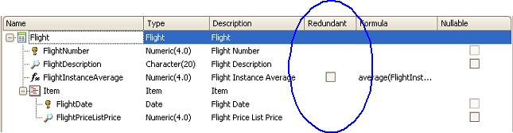
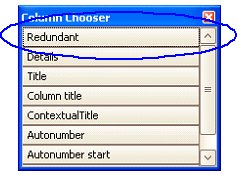

Redundancy allows you to store a value in a Database table instead of calculating it every time it is needed. It improves data retrieval at the cost of data update performance.
Global formula attributes and Inferred attributes can be defined as redundant by checking the Redundant column in the Transaction editor:

The Redundant column is, by default, hidden. You can include it in the Transaction editor by using the Column Chooser:

In order to open the Column Chooser, right-click on the column headers row in the Transaction editor, and select it from the contextual menu; then, select the Redundant option within the Column Chooser, and drag and drop the selected option to the column bar of the transaction.
Note that once the Redundant column is included in the Transaction editor, the redundant check is enabled only for those attributes that may be defined as redundant.
When an attribute is defined as redundant, the next Database Reorganization will add it to the corresponding table and will populate its values.
GeneXus keeps redundant attributes up to date as changes are made to the Database.
A typical Formula definition follows. See below for comments.
Customer
{
CustomerID*
CustomerTotal = sum(InvoiceTotal)
CustomerLinesTotal = sum(InvoiceLineTotal)
}
Invoice
{
InvoiceId*
CustomerId
InvoiceTotal = sum(InvoiceLineTotal)
InvoiceLines
{
ItemID*
ItemPrice
InvoiceLineQty
InvoiceLineTota = ItemPrice * InvoiceLineQty
}
}
| Attribute | Initialized | Updated | Comments |
|---|---|---|---|
| InvoiceTotal | Yes | Yes | |
| CustomerTotal | Yes | Yes | |
| CustomerLinesTotal | Yes | No |
Formulas that aggregate more than one level of non-redundant formulas will not be correctly maintained. Navigation diagram shows warning message: spc0043: CustomerLinesTotal is not instantiated in grid ... |
| Backlinks | |
| Rebuild Redundancy | Redundant Formulas |